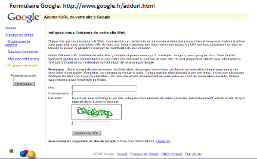

• Plusieurs sites proposent un référencement automatique rapide du site web dans les
principaux annuaires et moteurs.
• Bien prendre le soin de faire un tour dans la liste de catégories offertes par l’annuaire et de
choisir la catégorie convenable.
• On peut aussi ajouter des adresses web à un
moteur de recherche (comme le cas de
Google).

Paramètres externes
• Le PageRank (PR), de google, est un critère
mathématique permettant de mesurer la
popularité d'une page sur le web.
• Plus il est élevé, plus la page est censée être
populaire.
• Le PageRank est l'un des éléments pris en compte
par Google pour positionner les pages Web.
• Google affecte aussi un score à chaque page Web.
Cette note est attribuée en fonction de nombreux
critères et principalement en fonction des liens
externes (popularité de liens) pointant vers la
page web, ainsi que des liens que cette dernière
fait vers elle-même (liens internes).
• Le terme PageRank est une note donnée sur 10.
Référencement de sites en Flash
• Une page Web est généralement construite à base de balises
structurées. Ces balises sont lisibles et déchiffrables par les
navigateurs. De même les robots d’indexation sont capables
de lire leur contenu.
• Une page qui contient un objet flash (animation) exige un
plugin supplémentaire pour pouvoir lire le contenu
correctement. Une animation flash est similaire à une image,
son contenu demeure illisible par le navigateur et de même
pour le robot d’indexation.
• Une page faite entièrement en Flash est alors similaire, de
point de vue du robot, à une page HTML vide. Donc son
référencement reste compromis.
• La meilleure façon de réussir un bon référencement d’un site
Flash consiste à créer une version identique en HTML.
• Celle-ci sera destinée aux robots d’indexation et non pas aux
internautes.
• Donc chaque page HTML fait une redirection immédiate (et
inaperçu par l’internaute) vers la page correspondante en
Flash.
• Un site référencé en Flash donne souvent des résultats de
positionnement satisfaisantes.
• Cependant, les moteurs de recherches commencent à donner
plus d’importance aux site Flash en essayant d’extraire du
texte (mots-clé) à partir de l’objet animé.